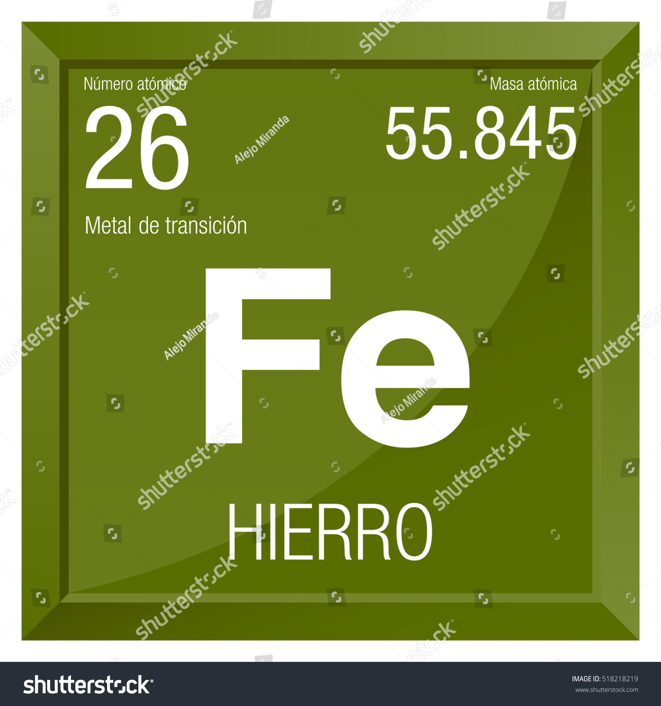

Hierro ;3
El hierro (Fe) tiene número atómico 26 y una masa atómica de 55,847 u,
situándose en el grupo 8 y período 4 de la tabla periódica, dentro de los metales de transición +1
Es un metal gris plateado, maleable, dúctil y magnético, con alta densidad y dureza

Regresar
Volver a inicio